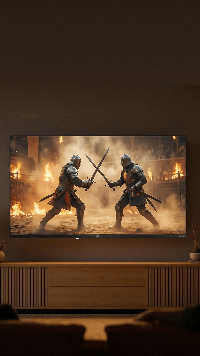
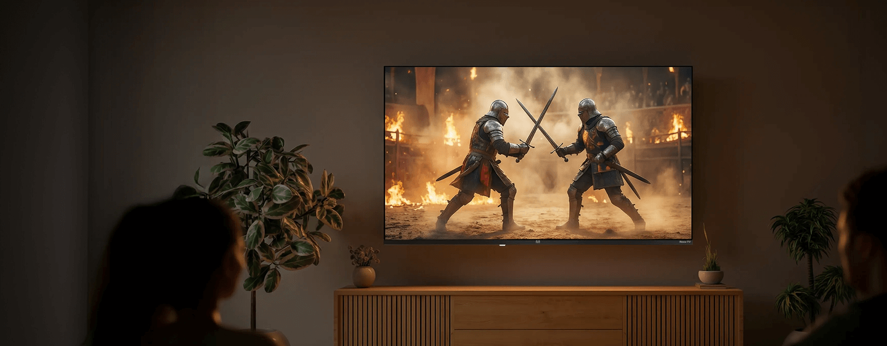
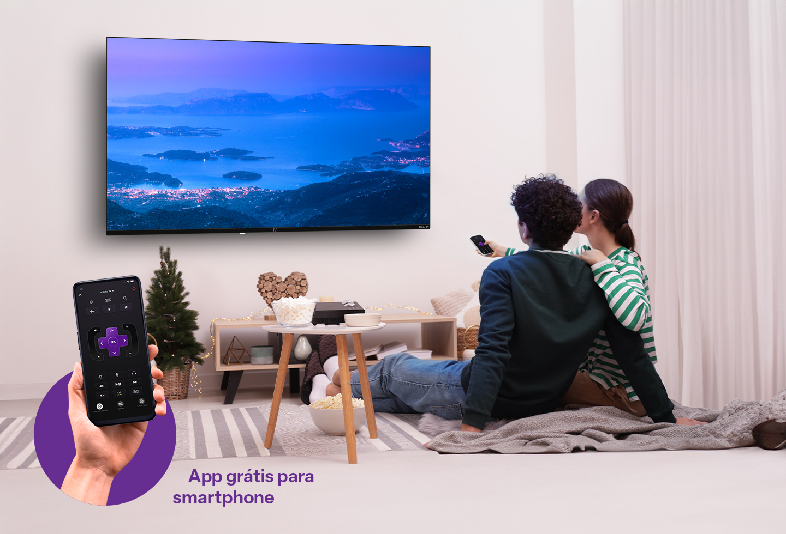
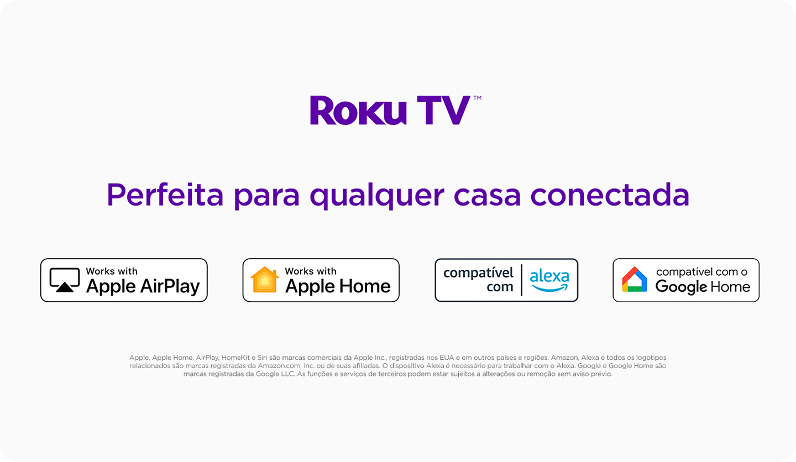
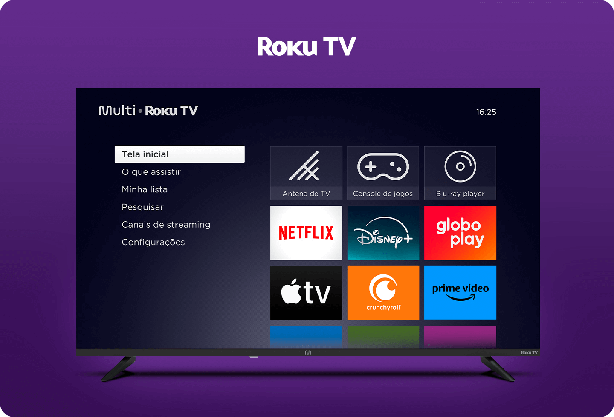

Qualidade de imagem
Descubra a incrível qualidade de imagem da Roku TV 4K, com cores vibrantes, brilho
impressionante e contraste excepcional. Aproveite um entretenimento imersivo e
mergulhe em um mundo de detalhes surpreendentes.


Descubra a incrível qualidade de imagem da Roku TV 4K, com cores vibrantes, brilho
impressionante e contraste excepcional. Aproveite um entretenimento imersivo e
mergulhe em um mundo de detalhes surpreendentes.
A tecnologia 4K redefine os padrões de qualidade visual, proporcionando uma
nitidez impressionante. Com duas vezes mais resolução que as telas Full HD,
as imagens ganham detalhes vívidos e cores vibrantes.
Com uma definição ainda maior e cores mais vibrantes e realistas, a tecnologia
4K proporciona uma imersão completa ao assistir filmes e séries, aprimorando
a qualidade de imagem e das cores.
Com um excelente brilho e contraste, tenha imagens mais claras e
vibrantes. O alto contraste destaca detalhes em áreas claras e escuras,
resultando em uma visualização mais realista e envolvente.
E não são apenas os seus olhos que experimentarão uma nova jornada
com a Roku TV 4K. Equipadas com a tecnologia Dolby Audio, seus
ouvidos captarão um som ainda mais nítido e envolvente.
Controle sua TV diretamente do seu
dispositivo móvel com o aplicativo gratuito
da Roku, proporcionando uma experiência
ainda mais completa. Faça buscas por
voz,
transfira o áudio da TV para o seu celular e
muito mais.


Tenha acesso a uma interface intuitiva e diversos streamings com a
Smart TV. Aproveite a pesquisa universal, atualizações automáticas,
controle remoto avançado e o aplicativo gratuito para smartphone.

São 4 botões de atalho que levarão você
diretamente para as melhores séries, filmes e
vídeos, além de uma loja de aplicativos com
milhares de opções para você desfrutar de
uma forma rápida, prática e segura o melhor
que uma Smart TV pode proporcionar.
*Os botões de atalho do controle remoto podem variar.